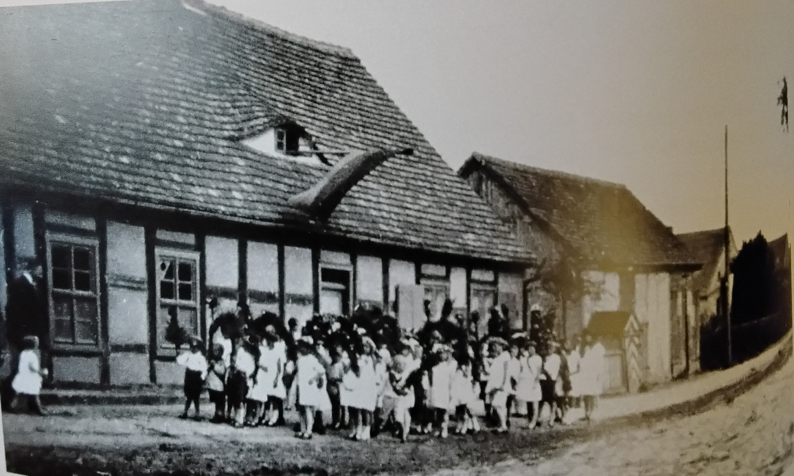

The Village School in Grünow

Photo: Unknown origin
The building of the former village school in Grünow was used as a school until around 1945. Classes were taught across grades in the rooms, so that pupils of different age groups were taught together.
The school building and its associated outbuilding were originally constructed as half-timbered buildings. Unfortunately, the historic timber framing was largely removed or reworked in the course of later alterations and modernisations. The original dormer, a so-called bat dormer that once characterised the building, was also removed during modernisation.
After the Second World War, apartments were set up in the former school building. The municipal office was also located in the building. Unfortunately, it is now in a very dilapidated state. Parts of the building can no longer be used due to its structural condition. As a result, a significant piece of local history and the original building fabric of the former village school is threatened with being lost.